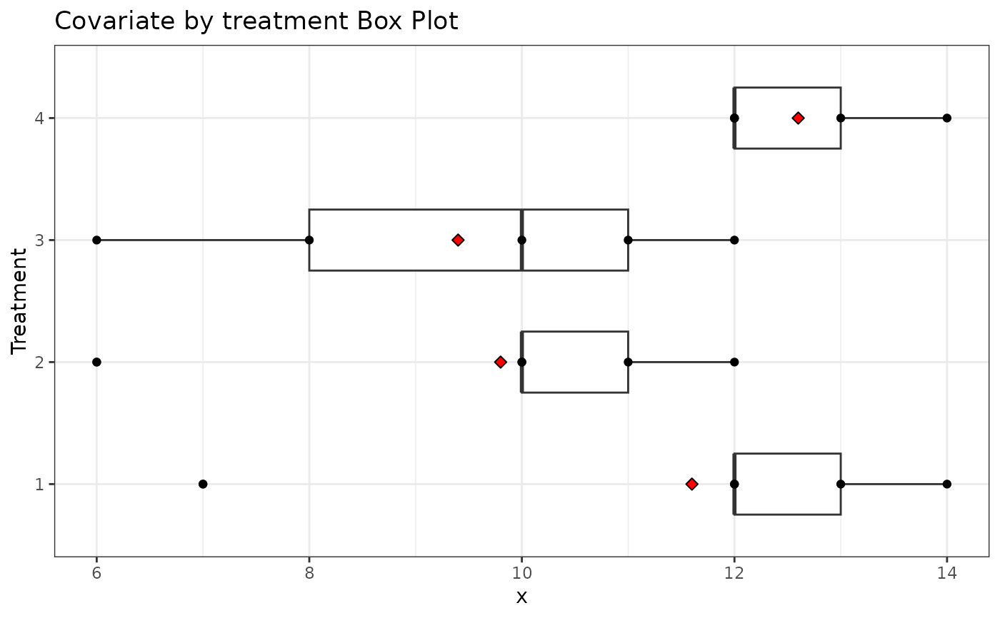

Example 7.2 from Generalized Linear Mixed Models: Modern Concepts, Methods and Applications by Walter W. Stroup (p-219)
Source:R/Exam7.2.R
Exam7.2.RdExam7.2 explains multifactor models with some factors qualitative and some quantitative(Equal slopes ANCOVA)
References
Stroup, W. W. (2012). Generalized Linear Mixed Models: Modern Concepts, Methods and Applications. CRC Press.
@seealso
DataSet7.2
Author
Muhammad Yaseen (myaseen208@gmail.com)
Adeela Munawar (adeela.uaf@gmail.com)
Examples
library(emmeans)
library(car)
library(ggplot2)
data(DataSet7.2)
DataSet7.2$trt <- factor( x = DataSet7.2$trt )
##----ANCOVA(Equal slope Model)
Exam7.2fm1 <- aov(formula = y ~ trt*x, data = DataSet7.2)
car::Anova(mod = Exam7.2fm1 , type = "III")
#> Anova Table (Type III tests)
#>
#> Response: y
#> Sum Sq Df F value Pr(>F)
#> (Intercept) 1225.64 1 199.1846 7.785e-09 ***
#> trt 55.55 3 3.0091 0.07225 .
#> x 209.27 1 34.0093 8.064e-05 ***
#> trt:x 25.96 3 1.4062 0.28893
#> Residuals 73.84 12
#> ---
#> Signif. codes: 0 ‘***’ 0.001 ‘**’ 0.01 ‘*’ 0.05 ‘.’ 0.1 ‘ ’ 1
##---ANCOVA(without interaction because of non significant slope effect)
Exam7.2fm2 <- aov(formula = y ~ trt + x, data = DataSet7.2)
car::Anova(mod = Exam7.2fm2 , type = "III")
#> Anova Table (Type III tests)
#>
#> Response: y
#> Sum Sq Df F value Pr(>F)
#> (Intercept) 2994.45 1 450.076 1.340e-12 ***
#> trt 302.16 3 15.138 8.301e-05 ***
#> x 542.90 1 81.599 1.871e-07 ***
#> Residuals 99.80 15
#> ---
#> Signif. codes: 0 ‘***’ 0.001 ‘**’ 0.01 ‘*’ 0.05 ‘.’ 0.1 ‘ ’ 1
##---Ls means for 2nd model
emmeans(object = Exam7.2fm2, specs = ~trt)
#> trt emmean SE df lower.CL upper.CL
#> 1 47.7 1.17 15 45.2 50.2
#> 2 54.6 1.19 15 52.1 57.1
#> 3 44.9 1.23 15 42.3 47.5
#> 4 53.1 1.26 15 50.4 55.8
#>
#> Confidence level used: 0.95
##---Anova without covariate
Exam7.2fm3 <- aov(formula = y ~ trt, data = DataSet7.2)
car::Anova(mod = Exam7.2fm3, type = "III")
#> Anova Table (Type III tests)
#>
#> Response: y
#> Sum Sq Df F value Pr(>F)
#> (Intercept) 10448.2 1 260.1115 2.564e-11 ***
#> trt 385.3 3 3.1972 0.05183 .
#> Residuals 642.7 16
#> ---
#> Signif. codes: 0 ‘***’ 0.001 ‘**’ 0.01 ‘*’ 0.05 ‘.’ 0.1 ‘ ’ 1
##---Ls means for 3rd model
emmeans(object = Exam7.2fm3, specs = ~trt)
#> trt emmean SE df lower.CL upper.CL
#> 1 45.7 2.83 16 39.7 51.7
#> 2 57.4 2.83 16 51.4 63.4
#> 3 48.7 2.83 16 42.7 54.8
#> 4 48.4 2.83 16 42.4 54.5
#>
#> Confidence level used: 0.95
##---Box Plot of Covariate by treatment
Plot <-
ggplot(
data = DataSet7.2
, mapping = aes(x = factor(trt), y = x)
) +
geom_boxplot(width = 0.5) +
coord_flip() +
geom_point() +
stat_summary(
fun = "mean"
, geom = "point"
, shape = 23
, size = 2
, fill = "red"
) +
theme_bw() +
ggtitle("Covariate by treatment Box Plot") +
xlab("Treatment")
print(Plot)
